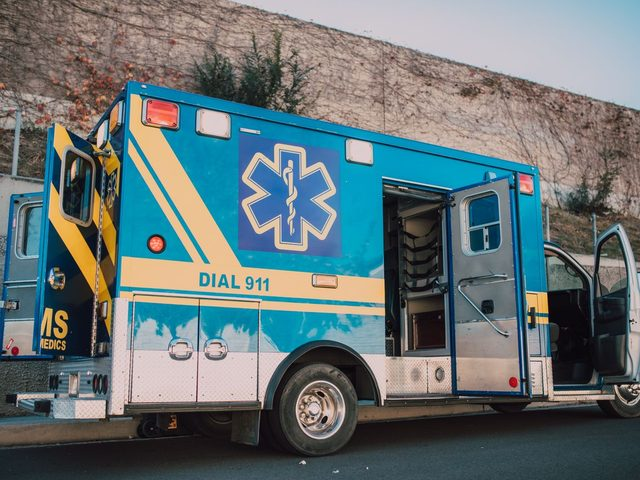
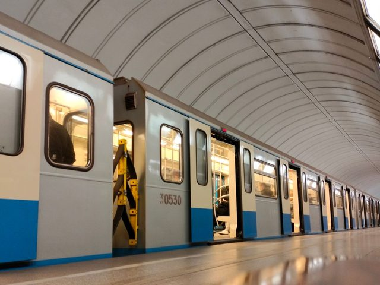

VOCABULARY · 主題 2000 字 PART 2 UNIT 18
Transportation．交通運輸
交通工具、車站、道路和乘車用語，共 20 個。注意 overpass（天橋）↔ underpass（地下道）。
共 20 個單字．點 🔊 聽發音

1ambulancen.
救護車
call an ambulance 叫救護車
Call an ambulance! Someone is hurt.叫救護車！有人受傷了。
2helicoptern.
直升機
The helicopter landed on the roof of the hospital.直升機降落在醫院屋頂上。

3jeepn.
吉普車
We rode a jeep up the mountain.我們坐吉普車上山。

4tankn.
坦克；水箱；油箱
gas tank 油箱；fish tank 魚缸
We have three goldfish in our fish tank.我們的魚缸裡有三條金魚。

5airlinen.
航空公司
air + line
Which airline are you flying with?你搭哪一家航空公司？

6bus stopn.
公車站
I'll wait for you at the bus stop.我在公車站等你。

7parking lotn.
停車場
park 停車
The parking lot is full today.今天停車場滿了。

8train stationn.
火車站
Let's meet at the train station at nine.我們九點在火車站見。

9flat tiren.
爆胎；輪胎沒氣
flat 扁平的
We got a flat tire on the way home.我們回家路上爆胎了。
10highwayn.
公路；高速公路
high + way
Cars drive fast on the highway.車子在高速公路上開得很快。

11MRTn.
捷運（大眾捷運系統）
Mass Rapid Transit
I take the MRT to school every day.我每天搭捷運上學。

12overpassn.
天橋；陸橋
over 上方 + pass 通過
Use the overpass to cross the busy road.走天橋過這條車很多的馬路。
13passengern.
乘客
All passengers must wear seat belts.所有乘客都必須繫安全帶。

14pathn.
小路；小徑
Follow the path to the lake.沿著小路走到湖邊。

15platformn.
月台；講台
Platform 2 第二月台
The train to Kaohsiung leaves from Platform 2.往高雄的火車從第二月台出發。

16railroadn.
鐵路
= railway
The railroad runs along the coast.這條鐵路沿著海岸走。

17railwayn.
鐵路；鐵道
= railroad（英式）
Taiwan High Speed Railway is very fast.台灣高鐵非常快。

18subwayn.
地鐵
= MRT／metro／underground
You can take the subway to the museum.你可以搭地鐵去博物館。
19underpassn.
地下道
under 下方 + pass；↔ overpass
There are many small shops in the underpass.地下道裡有很多小商店。

20wheeln.
輪子；方向盤
steering wheel 方向盤
A bicycle has two wheels.腳踏車有兩個輪子。
FOCUS
過馬路：上面還是下面
| 字 | 意思 |
|---|---|
| overpass | 天橋（從上面過） |
| underpass | 地下道（從下面過） |
| crosswalk | 斑馬線 |
over 在上、under 在下；pass 通過。
FOCUS
各地的「地鐵」
| 地方 | 說法 |
|---|---|
| 台灣 | MRT |
| 美國 | subway |
| 英國倫敦 | the Underground |